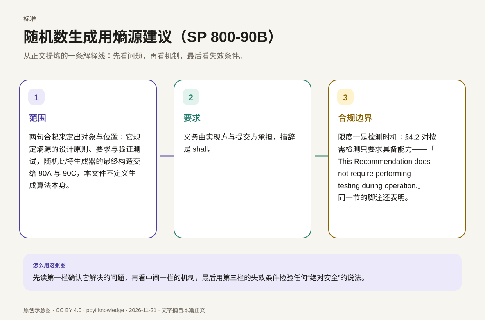
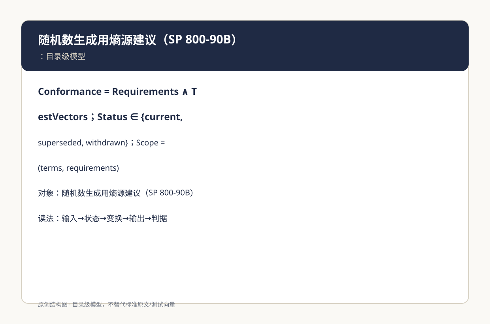

原理与机制
标准：随机数生成用熵源建议（SP 800-90B）（Recommendation for the Entropy Sources Used for Random Bit Generation (SP 800-90B)）。摘要写明规定两件事：「This Recommendation specifies the design principles and requirements for the entropy sources used by Random Bit Generators, and the tests for the validation of entropy sources.」并交代它与其他两册的分工：「These entropy sources are intended to be combined with Deterministic Random Bit Generator mechanisms that are specified in SP 800-90A to construct Random Bit Generators, as specified in SP 800-90C.」它管熵源，不管生成器算法本身。两句合起来定出对象与位置：它规定熵源的设计原则、要求与验证测试，随机比特生成器的最终构造交给 90A 与 90C，本文件不定义生成算法本身。

为什么重要
§1.1 从实操困难说起：「However, the generation of random bits is problematic in many practical applications of cryptography.」并把最难的一环交出：「The development of entropy sources that construct unpredictable outputs is difficult, and providing guidance for their design and validation testing is even more so.」同节说明测试思路的前提是开发者理解自己的随机源。§2.2.1 把噪声源抬到根本位置：「The noise source is the root of security for the entropy source and for the RBG as a whole.」三段合起来是理由链条：随机比特在实践里难以产出，难产出的根源是熵源，熵源之难又落在设计与可验证性上；把噪声源称作安全之根，正是把整套随机数体系的地基放在这一层。
应用与实例
义务由实现方与提交方承担，措辞是 shall。§4.3 规定检测组成：「The health tests shall include both continuous and start-up tests.」并规定失败时的动作：「When the health tests fail, the entropy source shall notify the consuming application」，由消费该源的随机数生成器处置。§4.4 把阈值选择交给开发者：「The developer of the entropy source shall determine a reasonable probability of type I error」。度量口径见 §2.1：「this Recommendation uses a very conservative measure known as min-entropy, which measures the effectiveness of the strategy of guessing the most likely output of the entropy source.」引文同时交代口径与责任：min-entropy 是保守度量，检测构成与失败上报是 shall 级，误报概率与阈值则交由开发者按自身噪声源的情形决定。

边界与攻击面
限度一是检测时机：§4.2 对按需检测只要求具备能力——「This Recommendation does not require performing testing during operation.」同一节的脚注还表明启动条件由 FIPS 140 定，「This document imposes no additional requirements for the use of start-up health testing.」限度二是可验证性：符合性测试一节承认部分要求「may be out-of-scope for CAVP or CMVP validation testing」。限度三是它自身不单独成事：§1.1 写「SP 800-90A addresses the construction of approved DRBG mechanisms, while SP 800-90C addresses the construction of RBGs from the mechanisms in SP 800-90A and the entropy sources in SP 800-90B.」随机位的最终构造在另两册。
历史与背景
扉页首行「NIST Special Publication 800-90B」，标题行「Recommendation for the Entropy Sources Used for Random Bit Generation」，作者行含「Kerry A.McKay Mary L.Baish Mike Boyle」（扉页把第一作者姓名印作 Sönmez Turan，变音符号在留存件里存在；为使每段引文都能逐字核验，姓名写在引号外）；日期行为 2018 年 1 月，引用行「Natl.Inst.Stand.Technol.Spec.Publ.800-90B, 84 pages (January 2018) CODEN: NSPUE2」，免费获取行后接 DOI 10.6028/NIST.SP.800-90B。致谢页点名协助者：「The authors of this Recommendation gratefully acknowledge and appreciate contributions by their colleagues at NIST, Apostol Vassilev and Timothy A.Hall」。§1.1 另记与美国家标准的关系：「This Recommendation was developed in concert with American National Standard (ANS) X9.82, a multi-part standard on random number generation.」
逐步示例与核验
形式模型与复算步骤
[S=\min_i S_i,\quad S_i\in{\text{密钥强度},\text{分组安全},\text{实现安全}}]
随机数生成用熵源建议（SP 800-90B）的公开参数、密钥/随机数与消息；变量说明：S 为综合安全强度；各分量取最小值，不能只看密钥位数。1.读取标准规定的密钥/分组/模式参数。2.按标准表换算等效强度。3.取最弱分量作为系统强度。边界：公式只覆盖已登记的参数与假设；参数取值、标准版本和实现细节仍以来源为准。
参考出处
- Wikipedia search entry for 随机数生成用熵源建议（SP 800-90B）. https://zh.wikipedia.org/w/index.php?search=%E9%9A%8F%E6%9C%BA%E6%95%B0%E7%94%9F%E6%88%90%E7%94%A8%E7%86%B5%E6%BA%90%E5%BB%BA%E8%AE%AE%EF%BC%88SP%20800-90B%EF%BC%89
- Handbook of Applied Cryptography (Menezes, van Oorschot, Vanstone). https://www.cacr.math.uwaterloo.ca/hac/